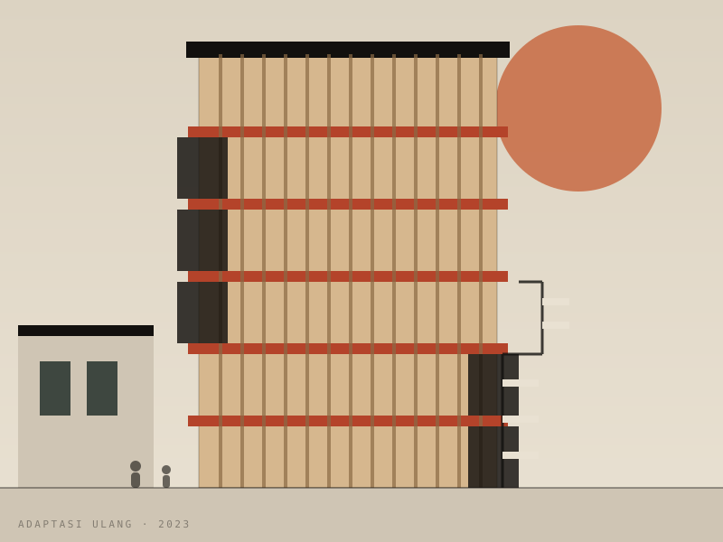
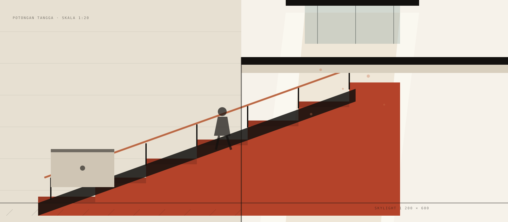

Karya / 02Adaptasi ulang · Bandung · 2023
Menara
Kayu
Gedung kantor 1970-an yang tidak kami bongkar — hanya dibuka, diperkuat, dan dilapisi kayu.
- Lokasi
- Bandung, Jawa Barat
- Luas
- 4.800 m² total
6 lantai - Tahun
- 2023
- Peran
- Arsitektur, struktur, interior
- Tim
- Aria Wibowo, Bima Nugraha, Larasati Hutomo
- Status
- Selesai, terisi 100%

Gedung ini dibangun pada 1973 untuk sebuah perusahaan tekstil. Ketika klien membelinya, rekomendasi pertama dari konsultan lain adalah membongkar seluruhnya dan membangun ulang. Kami menghitung ulang kolom dan pondasinya selama enam minggu. Hasilnya: 82% struktur lama masih layak.
Kami mempertahankan rangka beton, melepas seluruh dinding pengisi, lalu memasukkan struktur kayu meranti laminasi setinggi enam lantai. Kayunya berasal dari hutan rakyat di Jawa Barat, dipotong dan dikeringkan dalam satu musim. Sambungannya dibuat di workshop Cimahi, lalu dirakit di lokasi dalam sebelas hari.
Balkon selebar 1,5 meter menjorok ke barat. Di sore hari, slat vertikal menyaring matahari sehingga kantor tidak perlu menutup tirai. Sistem ventilasi silang bekerja tanpa AC di semua koridor dan tangga. AC hanya ada di ruang rapat dan ruang server.
“Struktur lama adalah bahan, bukan hambatan. Yang mahal justru membuangnya.”
Sepuluh penyewa sudah menempati gedung ini sejak bulan ketiga. Mereka mengubah partisi, menambah rak, dan mengecat satu dinding menjadi hijau. Semua itu bisa dilakukan tanpa menyentuh struktur — persis seperti yang kami rencanakan.

Proyek berikutnya
Pasar Lama
Ruang publik · Semarang · 2025